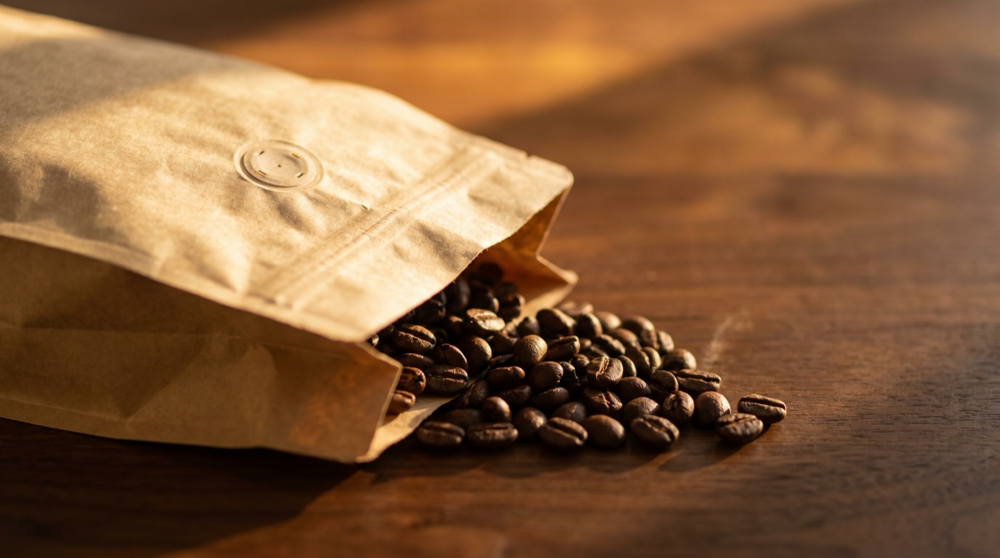
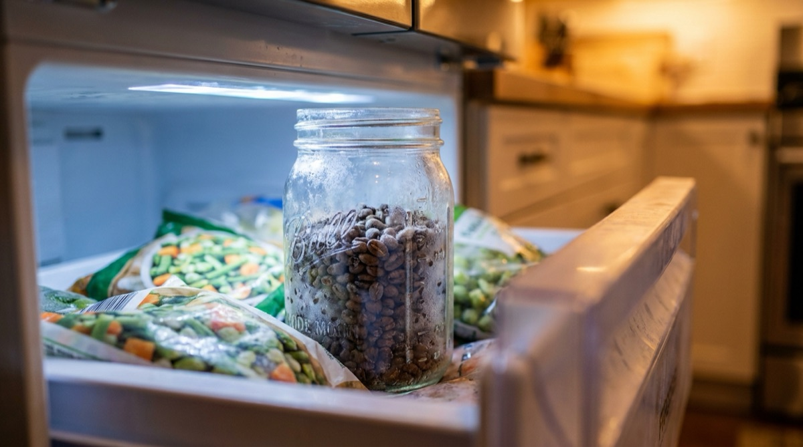

Coffee bean freshness: how long does espresso stay at peak?

"Best within 4 weeks of roast date." You'll see this on almost every specialty bag and it's close to useless as advice. Four weeks at what temperature? In what container? For espresso or filter? A natural Ethiopian and a washed Brazilian are not the same coffee; they don't peak on the same day. A dark roast in a valve bag on your counter and a light roast in a vacuum canister behave nothing alike.
This article is the framework we wish someone had given us when we started taking freshness seriously. It's the science behind the "peak" language, the storage choices that actually matter, and an honest answer to the freezer question.
What happens to coffee after roasting
Roasting drives three reactions simultaneously: the Maillard reaction creates the sweet, toasty flavour compounds; caramelisation develops sugars; and pyrolysis produces CO₂ and the volatile aromatic compounds that make coffee smell like coffee. The moment you drop the beans out of the roaster, all three stop generating. What happens next is degassing and oxidation.
Degassing is CO₂ venting out of the bean. Fresh beans contain enormous amounts of trapped CO₂ — enough that a brand-new bag packed without a one-way valve will eventually pop. Over the first 1–14 days post-roast, the CO₂ level drops rapidly. In espresso, too much CO₂ means the shot erupts out of the group head and extraction is uneven; too little means the crema is flat and the shot tastes hollow.
Oxidation is oxygen reacting with lipids and aromatics inside the bean. This is what makes old coffee taste like cardboard. Oxidation is slow in whole beans (days to weeks) and alarmingly fast in ground coffee (minutes). It accelerates with light, heat, and humidity.
The "peak window" is the intersection of "enough degassing has happened that the coffee is brewable" and "not enough oxidation has happened to kill the aromatics". Every roast has one. The width and position of the window depends on roast level and bean.
Peak windows by roast level
These are starting estimates — every bean is different, but the ranges are a useful prior.
| Roast level | Peak for espresso | Peak for filter | Notes |
|---|---|---|---|
| Light | Day 10–28 | Day 14–35 | Needs the longest to degas; rewards patience. |
| Medium-light | Day 7–21 | Day 10–28 | The specialty coffee default; broad peak window. |
| Medium | Day 5–18 | Day 7–21 | Forgiving; drinkable sooner but fades quicker. |
| Medium-dark | Day 4–14 | Day 5–16 | Peaks fast, fades fast. Buy smaller quantities. |
| Dark | Day 3–10 | Day 4–12 | Tight window; past day 10 the flavour flattens noticeably. |
Why these vary: darker roasts have more broken cell walls, so CO₂ escapes faster and oxygen penetrates deeper. Light roasts retain more CO₂ and more oils that take longer to oxidise. The darker the roast, the faster the whole curve runs.
Why espresso is especially sensitive
Espresso highlights the degassing state more than any other method. High-pressure extraction through a tightly-packed puck is a sensitive process — too much gas and the puck fractures; too little and the extraction is dull. A coffee that tastes fine as filter on day 4 can pull a dead, hollow shot as espresso.
The rule of thumb we use: subtract 3–5 days from the filter peak window to get the espresso window. A freshly roasted bag is great for French press on day 3, but a week too early for a good shot.
Storage methods, ranked
Storage affects the rate at which a bag declines after opening. The roaster's valve bag is good for the first few weeks; once opened, how you store matters.
Ranked by how effectively they slow oxidation:
- Vacuum canister (e.g. Fellow Atmos, Timemore). Pumped-vacuum containers are the best non-freezer option. They remove most of the oxygen from the headspace and keep it out. Bags last 2–3× longer than in a standard jar.
- Airscape (one-way valve canister). A sealed canister with a plunger that pushes out the headspace oxygen. Slightly less effective than vacuum but much cheaper and more convenient.
- Valve jar (classic mason jar with a one-way valve cap). Better than a plain jar; the valve stops new oxygen entering during degassing but doesn't help much after.
- Original roaster bag, clipped tightly. The one-way valve is already built in. With a good clip this is a surprisingly decent baseline.
- Original bag, loosely rolled. Ambient oxygen slowly enters. Fine for a week; not great beyond that.
- Clear glass jar on the counter. Light + oxygen. The worst option short of leaving the bag open.

The freezer question
Yes, you can freeze coffee. In fact, the freezer is the single most effective way to extend a bag's life beyond its natural peak. The rules matter though.
- Freeze at peak, not at purchase. Let the bag finish degassing (usually 7–14 days post-roast), then freeze. Freezing too early locks in too much CO₂.
- Airtight container at -18°C or colder. A vacuum-sealed bag or an Airscape in the freezer. Loosely bagged coffee picks up freezer smells.
- Thaw once, brew within a week. Repeated freeze-thaw is bad. Split the bag into weekly portions and freeze each separately; only thaw what you'll drink.
- Grind from frozen. Yes, really. You can grind beans straight out of the freezer — grinders handle it fine, and the static is measurably less at cold temperatures.
A well-frozen bag holds its peak for about 6 months. Beyond that, slow oxidation still happens even at freezer temperatures, just at roughly 1/10th the rate.
Know when every bag is at its best.
Extraction's freshness gauge adjusts for your storage method — Airscape, vacuum, freezer — and pauses the clock when a bag is frozen. Peak alerts fire exactly when each coffee hits its window.
Download on the App StoreWhen to give up on a bag
There's no hard rule, but these are the signs it's over:
- The aroma is muted or slightly stale when you open the bag. Fresh coffee has a distinct, bright smell; old coffee smells like dusty cardboard.
- The shot crema is pale and dissipates quickly. Fresh espresso holds its crema for several minutes; stale espresso's crema fades in under 30 seconds.
- The cup tastes flat — no sweetness, no acidity, just generic "coffee". This is oxidation erasing the delicate compounds first. The bass notes stay; the top notes disappear.
If you've got 100 g left in a stale bag, don't throw it away — it still makes fine cold brew, fine batch filter, and perfectly drinkable milk drinks. Espresso and pour-over are the two methods that suffer most.
Frequently asked questions
For espresso, 2–3 weeks at good storage. For filter, 3–5 weeks. These are "still enjoyable" not "peak" — the peak window is narrower.
Yes. The fridge has a lot of humidity and absorbs every food smell around it. Coffee is a sponge for both. The freezer works because it's much colder (freezing stops the chemistry) and because you're storing in a sealed container. The fridge is the worst of both worlds.
Roast level dependent. Dark roasts peak at days 3–10, light roasts at days 10–28, medium in between. Espresso peak is 3–5 days earlier than filter peak for the same coffee.
The date on most bags is a hint, not a deadline. A well-stored bag can drink well past it. The aroma test when you open the bag is more reliable than any printed date.